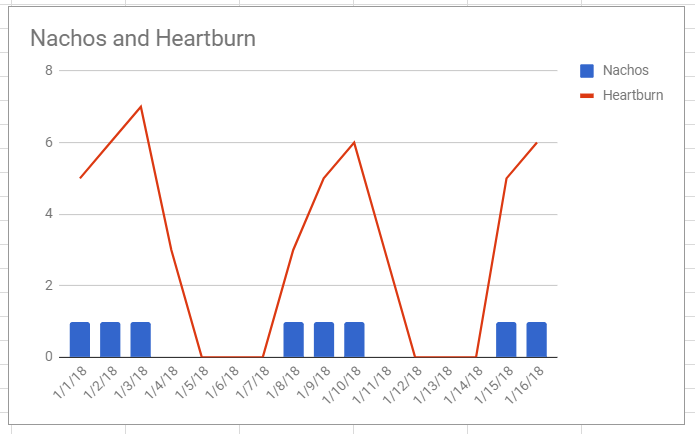

Nav Bar - Log in
Review your data
-Hero Image-
Your Health Target Score: 80%
Based on the last 10 days of entries
Likely things to avoid: Gluten, stress, pizza
You have your best days when you have: Exercise, Lettuce, French fries
Select a Symptom:
Tired
Headache
Stomach ache
Sick stomach
Heartburn
Pain
Gas
Based on your most recent data - here are some connections we see to this symptom:
Possible factors associated with ***: Dairy, Onions, Wheat
--chart showing symptom/rating against points when factor recorded

-other smaller charts of other possible causes related to symptom with link to show them big-
We analyze your data to find trends and connections to help you make better choices for your health.